En la programació informàtica, un bucle és una seqüència d'instruccions que es repeteix contínuament fins que s'arriba a una determinada condició. Normalment, es fa un determinat procés, com ara obtenir un element de dades i canviar-lo, i després es comprova alguna condició, com si un comptador hagi arribat a un nombre prescrit. Si no ho fa, la següent instrucció en la seqüència és una instrucció per tornar a la primera instrucció de la seqüència i repetir la seqüència. Si s'ha arribat a la condició, la següent instrucció "cau" a la següent instrucció seqüencial o branques fora del bucle. Un bucle és una idea fonamental de programació que s'utilitza habitualment en l'escriptura de programes.
En aquest CodeLab utilitzarem els loops per a crear imatges artístiques i ritmes musicals.
Descarrega Processing de la seva web oficial:
Descomprimeix l'arxiu que has descarregat i executa Processing.
S'obrirà l'entorn de programació de Processing. Anomena i desa el projecte amb el nom Loops

Instal·la també la llibreria Sound. Per fer-ho ves a Herramientas > Añadir Herramienta...
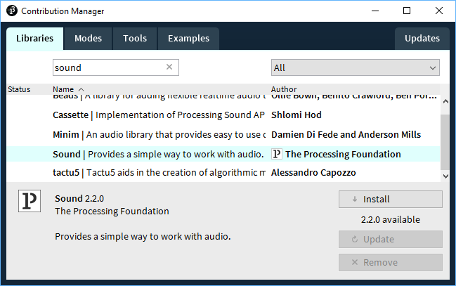
També necessitaràs aquests dos sons, descarrega'ls a la carpeta del projecte amb els noms que s'indiquen:
https://freewavesamples.com/files/Korg-N1R-Snare-Drum.wav snare.wav
https://freewavesamples.com/files/Korg-N1R-Bass-Drum.wav bass.wav
Processing proporciona una API amb infinitud de mètodes a disposició del programador per a ser usats. En aquest CodeLab utilitzarem aquests:
|
| Defineix el tamany de la finestra |
|
| Defineix el color de fons |
|
| Defineix el color en que s'ompliràn les figures |
|
| Defineix el color en que es dibuixaran les línies i les vores de les figures |
|
| Defineix el gruixut en que es dibuixaran les línies i les vores de les figures |
|
| Dibuixa un circle |
|
| Dibuixa una línia |
|
| Dibuixa un punt |
|
| Dibuixa un rectangle |
|
| Dibuixa un triangle |
Començarem amb els rectangles.
Dibuixar un rectangle és molt fàcil:
size(300, 200); // finestra de 300x200
background(0); // fons negre
stroke(255); // traç blanc
fill(0, 0); // figures transparents
strokeWeight(2); // gruixut del traç 2
rect(0, 25, 100, 150); // el 0 és la posició x
// el 25 és la posició y
// el 100 és l'amplada
// el 150 és l'alçada
Dibuixar-ne varis també és molt fàcil. Només cal copiar la sentència vàries vegades:
size(300, 200); background(0); stroke(255); fill(0,0); strokeWeight(2);
rect(0, 50, 100, 150);
rect(10, 50, 100, 150);
rect(20, 50, 100, 150);
rect(30, 50, 100, 150);
rect(40, 50, 100, 150);
rect(50, 50, 100, 150);
Observa que al codi anterior, hi ha una sentència que es repeteix, on només varia el valor de la posició X del rectangle: 0, 10, 20, 30, 40
Quan tenim un patró que es repeteix en un programa, on hi només hi ha petites variacions en cada repetició, aquest patró és subceptible de transformar-lo en un loop.
Hem de detectar en què varia el patró i substituir allò que varia per una... variable!
rect(x, 50, 100, 150);
Ara cal definir quins valors prendrà aquesta variable en les successives iteracions del loop. És a dir, cal definir:
- Quin valor tindrà a l'inici → la
xcomença per0(x=0) - Quina condició ha de complir el valor → la
xés sempre menor o igual a50(x<=0) - Com es modificarà a cada iteració → en cada iteració la
xva augmentant en10(x += 10)
Així podem construir el bucle while:
size(300, 200); background(0); stroke(255); fill(0,0); strokeWeight(2);
int x=0;
while (x <= 50){
rect(x, 25, 100, 150);
x += 10;
}En el següent diagrama de flux podem veure com les dues instruccions que estan dintre del bucle while, es van repetint mentre es compleix la condició x<=50

Com dintre del bucle anem canviant el valor de la variable x, cada cop el rectangle es dibuix a en una posició diferent.
D'aquesta manera, en lloc d'especificar uns valors fixes per a dibuixar un rectangle, podem fer-ho amb valors canviants i dibuixar cada cop un rectangle diferent en posició i tamany.
Al següent exemple canviem els paràmetres posicióX, posicióY, amplada i alçada, en funció de la variable x:
Aquest cop utilitzarem un bucle for, que és equivalent al while però amb menys línies:
size(300, 200); background(0); stroke(255); fill(0,0); strokeWeight(2);
for (int x=0; x <= 50; x += 10){
rect(x, x, x, x);
}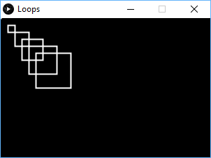
Aquest és el diagrama que explica el funcionament de l'algorisme anterior.

Com usem la variable x per a especificar tant la posicioX com la posicióY, com l'amplada i l'alçada, cada cop es dibuixa un rectangle més a la dreta, més avall, i més gran.
Observa que els bucles while i for són equivalents. De fet, el bucle for és una forma més concisa (amb una sola línia) del bucle while.

No sempre és fàcil (o inclús possible) trobar el patró que segueixen els valors, i això impossibilita poder usar un loop. Per exemple a la següent composició es fa difícil trobar un patro comú als valors:
size(300, 200); background(0); stroke(255); fill(0,0); strokeWeight(2);
rect(30, 19, 33, 36);
rect(10, 47, 55, 97);
rect(17, 14, 37, 59);
rect(123, 91, 13, 49);
rect(80, 72, 48, 71);
rect(97, 171, 67, 3);
rect(41, 112, 138, 7); 
Hi ha voltes que podem trobar patrons en els quals alguns valors es deriven d'altres valors:
size(300, 200); background(0); stroke(255); fill(0,0); strokeWeight(2);
rect(0, 0, 0, 0);
rect(10, 20, 15, 5);
rect(20, 40, 25, 10);
rect(30, 60, 35, 15);
rect(40, 80, 45, 20);
rect(50, 100, 55, 25);
rect(60, 120, 65, 30);
rect(70, 140, 75, 35); 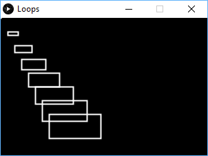
En aquest cas podem observar:
- La posició
xva augmentant de10en10 - La posició
yés el doble que la posicióx - L'
ampladaés la posicióxmés5 - L'
alçada és la mitat de la posicióx
De forma que podem transformar aquestes línies en un loop, amb els valors calculats a partir de la x (o qualsevol altre):
size(300, 200); background(0); stroke(255); fill(0,0); strokeWeight(2);
for (int x=0; x<=70; x += 10){
rect(x, x*2, x+5, x/2);
}Al següent dibuix podem trobar un patró entre la posicióX i l'amplada dels rectangles:
size(300, 200); background(0); stroke(255); fill(0,0); strokeWeight(2);
rect(0,0,0,25);
rect(1,0,1,25);
rect(4,0,2,25);
rect(9,0,3,25);
rect(16,0,4,25);
rect(25,0,5,25);
rect(36,0,6,25);
rect(49,0,7,25);
rect(64,0,8,25);
rect(81,0,9,25);
rect(100,0,10,25);El patró és, efectivament, que la posició és el quadrat de l'amplada:
size(300, 200); background(0); stroke(255); fill(0,0); strokeWeight(2);
for (int i=0; i<11; i++){
rect(i*i, 0, i, 25);
}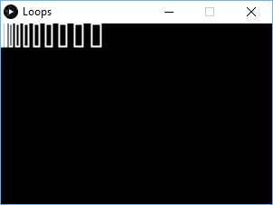
Doble loops
En alguns casos ens trobem que alguns valors segueixen un patró, i altres valors en segueixen un altre de diferent. Veiem un exemple.
size(300, 200); background(0); stroke(255); fill(0,0); strokeWeight(2);
rect(0,0,25,25);
rect(50,0,25,25);
rect(100,0,25,25);
rect(150,0,25,25);
rect(0,50,25,25);
rect(50,50,25,25);
rect(100,50,25,25);
rect(150,50,25,25);
rect(0,100,25,25);
rect(50,100,25,25);
rect(100,100,25,25);
rect(150,100,25,25);
rect(0,150,25,25);
rect(50,150,25,25);
rect(100,150,25,25);
rect(150,150,25,25);Aquest codi genera el següent dibuix:

Podem trobar un patró en els valors que passem a la funció rect()? Observem tres claus:
- El valor de l'alçada i l'amplada és sempre
25(no varia) - El valor de la posicióY va sumant
50cada quatre instruccions - El valor de la posicióX va sumant
50cada instrucció, però torna a començar per 0 cada quatre instruccions
Ignorem l'alçada i l'amplada, ja que sempre és 25 i no varia.
Podem trobar una relació entre la posicióX i la posicióY? En aquest cas no, no hi ha cap relació. Els valors són independents un de l'altre i no es pot calcular un a partir de l'altre. Aleshores, què podem fer?
Tractem de traure primer un patró i després veurem que fem amb l'altre. El més senzill de traure, en principi, és el de la posicióY, ja que va sumant cada quatre instruccions, però no torna a començar com el de la posicióX.
Programem així el patró que segueix la posicióY:
size(300, 200); background(0); stroke(255); fill(0,0); strokeWeight(2);
for(int y=0; y<=150; y+=50){
rect(0,y,25,25);
rect(50,y,25,25);
rect(100,y,25,25);
rect(150,y,25,25);
}Ara és més fàcil veure el patró de la posicióX. Podem substituir les quatre instruccions que hi ha dintre del loop, per un altre loop:

size(300, 200); background(0); stroke(255); fill(0,0); strokeWeight(2);
for(int y=0; y<=150; y+=50){
for (int x=0; x<=150; x+=50){
rect(x,y,25,25);
}
}Assegura't d'haver instal·lat la llibreria sound i que has descarregat els sons snare.wav i bass.wav
Reproduir sons amb aquesta llibreria és molt fàcil. Només cal carregar els sons i donar-li a play(). Podem jugar amb el delay() per a crear el ritme:
import processing.sound.*; // carreguem la llibreria sound
SoundFile snare = new SoundFile(this, "snare.wav");
SoundFile bass = new SoundFile(this, "bass.wav");
delay(1000); // donem temps per a carregar els sons
bass.play();
delay(400);
bass.play();
delay(400);
snare.play();
delay(800);
bass.play();
delay(400);
bass.play();
delay(400);
snare.play();
delay(800);
bass.play();
delay(400);
bass.play();
delay(400);
snare.play();
delay(800);We will, we will rock you

Aquí podem observar un patró que es va repetint. Fem un loop:
// Posa aquí el codi d'inicialització
for (int i=0; i<3; i++){
bass.play();
delay(400);
bass.play();
delay(400);
snare.play();
delay(800);
}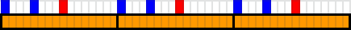
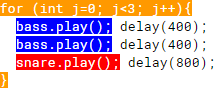
Amb un loop, hem repetit 3 cops les mateixes instruccions.
Podríem repetir aquest loop durant tota la cançó, però quedaria una mica monòtona... Cal posar un redoble:
for (int j=0; j<3; j++){
bass.play(); delay(400);
bass.play(); delay(400);
snare.play(); delay(800);
}
bass.play(); delay(400);
bass.play(); delay(400);
snare.play(); delay(200);
snare.play(); delay(200);
snare.play(); delay(200);
snare.play(); delay(200); 

Observa que el l'últim bloc (morat) és diferent als tres anteriors (taronja), no els podem incloure al mateix loop, ja que no segueixen el mateix patró. Repetim tres cops el patró taronja i un cop el patró morat.
Podem encara filar més prim i tractar d'extraure més patrons (coses que es repeteixen), per exemple els quatre snares del final:
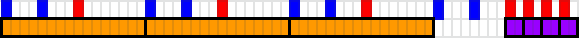

Anem a completar seguir una mica la cançò fent que tot aquest patró es repeteixi dues vegades:
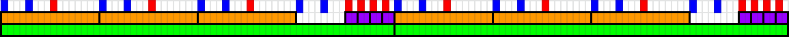
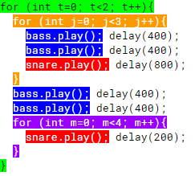
I així podriem seguir fins completar la cancó fent loops dintre de loops... Però abans d'acabar encara ens queda un petit patró en el codi:

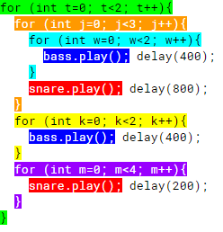
I d'aquesta forma, utilitzant loops, hem passat 30 cops de bateria a 9 instruccions de codi 👌
A la web https://www.openprocessing.org trobaràs moltíssimes obres d'art realitzades amb Processing. Aquí et poso algunes més bàsiques per que puguis estudiar-les.
size(200, 200);
for(int i=0; i<height; i+=10){
for(int j=0; j<width; j+=10){
fill(random(255), random(255), random(255));
stroke(random(255));
rect(j, i, 10, 10);
}
}
size(200, 200);
for(int i=0; i<height; i+=10){
for(int j=0; j<width; j+=10){
fill(random(255), random(255), random(255));
stroke(random(255));
triangle(j, i, j+5, i-10, j+10, i);
}
}
size(200, 200);
for(int i=0; i<height; i+=10){
for(int j=0; j<width; j+=10){
fill(random(255), random(255), random(255));
stroke(random(255));
circle(j, i, 10);
}
}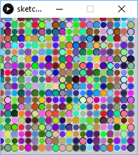
for(int i=0; i<height; i+=10){
for(int j=0; j<width; j+=10){
stroke(random(255), random(255), random(255));
line(j, i, width, height);
stroke(random(255), random(255), random(255));
line(0, 0, j, i);
stroke(random(255), random(255), random(255));
line(0, height, j, i);
stroke(random(255), random(255), random(255));
line(width,0, j, i);
}
}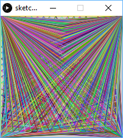
for (int i=0; i<height; i += 20){
for (int j=0; j<width; j += 20){
fill(random(255), random(255), random(255));
triangle(j, i, i, j, 20, 20);
}
}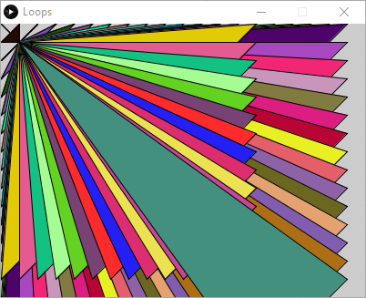
size(305, 375);
stroke(0);
strokeWeight(10);
fill(255);
rect(5, 5, 75, 81);
rect(5, 95, 75, 190);
rect(80, 180, 170, 190);
rect(250, 270, 50, 40);
fill(#ca4b2a);
rect(80, 5, 220, 265);
fill(#125093);
rect(5, 270, 75, 100);
fill(#fcea93);
rect(250, 310, 50, 60);